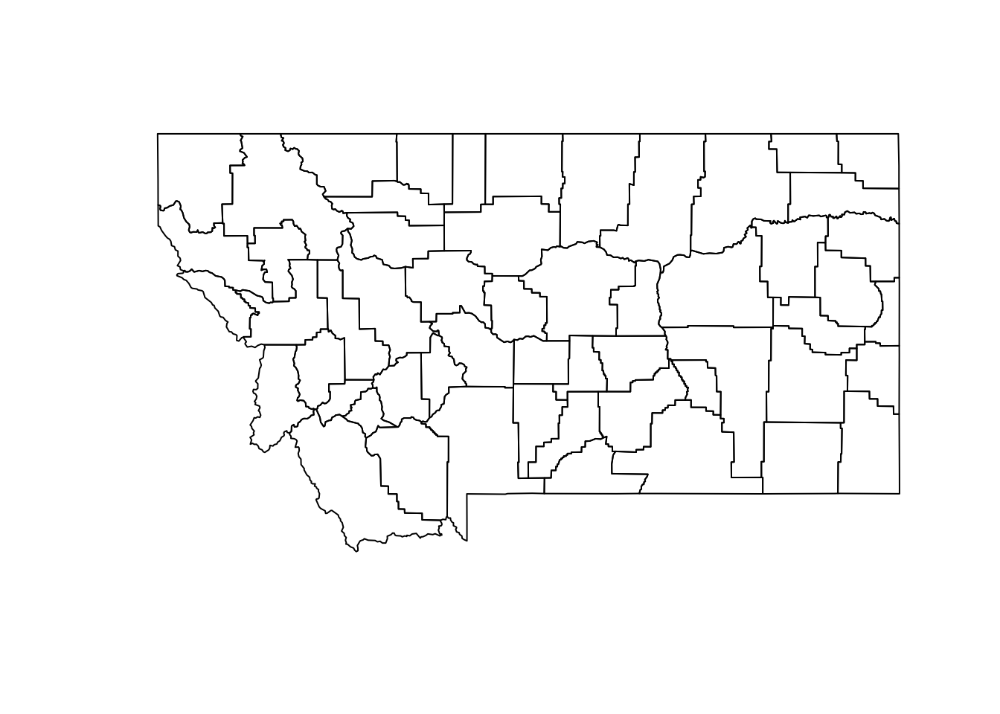

library(ProbitSpatial)Loading required package: Matrixlibrary(ProbitSpatial)Loading required package: Matrix# Pacotes
library(sf)Linking to GEOS 3.10.2, GDAL 3.4.1, PROJ 8.2.1; sf_use_s2() is TRUElibrary(sp)The legacy packages maptools, rgdal, and rgeos, underpinning the sp package,
which was just loaded, will retire in October 2023.
Please refer to R-spatial evolution reports for details, especially
https://r-spatial.org/r/2023/05/15/evolution4.html.
It may be desirable to make the sf package available;
package maintainers should consider adding sf to Suggests:.
The sp package is now running under evolution status 2
(status 2 uses the sf package in place of rgdal)# Abra o arquivo
natregimes_montana.shp <- st_read("data/natregimes_montana.gml")Reading layer `natregimes_montana' from data source
`/home/raphael/projects/ecoespacial/data/natregimes_montana.gml'
using driver `GML'
Simple feature collection with 55 features and 74 fields
Geometry type: MULTIPOLYGON
Dimension: XY
Bounding box: xmin: -116.0625 ymin: 44.35373 xmax: -104.0426 ymax: 49
Geodetic CRS: WGS 84natregimes_montana.shp <- st_make_valid(natregimes_montana.shp)
natregimes_montana.shp <- as_Spatial(natregimes_montana.shp)
# Plotar o mapa
plot(natregimes_montana.shp)
Para estes tipos de modelo, precisamos ter ou criar uma variável dicotômica para ser a variável de resposta do modelo.
natregimes_montana.shp@data$HRM <- ifelse(
natregimes_montana.shp@data$HR90 >= mean(natregimes_montana.shp@data$HR90), TRUE, FALSE
)library(spdep)Loading required package: spDataTo access larger datasets in this package, install the spDataLarge
package with: `install.packages('spDataLarge',
repos='https://nowosad.github.io/drat/', type='source')`library(spatialreg)
Attaching package: 'spatialreg'The following objects are masked from 'package:spdep':
get.ClusterOption, get.coresOption, get.mcOption,
get.VerboseOption, get.ZeroPolicyOption, set.ClusterOption,
set.coresOption, set.mcOption, set.VerboseOption,
set.ZeroPolicyOptionw1 <- nb2listw(poly2nb(natregimes_montana.shp, queen = TRUE))
w1 <- as(w1, "CsparseMatrix")esp <- HRM ~ RD90 + UE90mod_sar <- ProbitSpatialFit(
formula = esp,
data = natregimes_montana.shp@data,
W = w1,
DGP = "SAR"
)summary(mod_sar)-- Univariate conditional estimation of spatial probit --
Sample size = 55
Number of covariates = 3
DGP = SAR
estimation method = conditional
Variance covariance = Var-Covar Matrix
order of approx. of iW in the conditional step = 6
Execution time = 0.1199408
-----------------------------------------------
Unconditional standard errors with likelihood-ratio test
Estimate LR test Pr(>z)
(Intercept) -1.1675986 8.6786161 0.003219654
RD90 0.2980135 0.4508751 0.501919675
UE90 0.1561540 7.5361813 0.006047208
rho 0.2835792 1.1076506 0.292593222
-----------------------------------------------
Confusion Matrix:
pred 1 pred 0
true 1 7 4
true 0 13 31
Accuracy: 0.6909091
Sensitivity: 0.35 Specificity: 0.8857143
Pos Pred Value: 0.6363636 Neg Pred Value: 0.7045455 mod_sem <- ProbitSpatialFit(
formula = esp,
data = natregimes_montana.shp@data,
W = w1,
DGP = "SEM"
)summary(mod_sem)-- Univariate conditional estimation of spatial probit --
Sample size = 55
Number of covariates = 3
DGP = SEM
estimation method = conditional
Variance covariance = Var-Covar Matrix
order of approx. of iW in the conditional step = 6
Execution time = 0.007918835
-----------------------------------------------
Unconditional standard errors with likelihood-ratio test
Estimate LR test Pr(>z)
(Intercept) -1.2501767 8.9098968 0.002836293
RD90 0.2621078 0.3732729 0.541225647
UE90 0.1531211 7.0668738 0.007852214
rho 0.2287299 0.3990766 0.527566502
-----------------------------------------------
Confusion Matrix:
pred 1 pred 0
true 1 7 3
true 0 13 32
Accuracy: 0.7090909
Sensitivity: 0.35 Specificity: 0.9142857
Pos Pred Value: 0.7 Neg Pred Value: 0.7111111 mod_sarar <- ProbitSpatialFit(
formula = esp,
data = natregimes_montana.shp@data,
W = w1, M = w1,
DGP = "SARAR"
)summary(mod_sarar)-- Univariate conditional estimation of spatial probit --
Sample size = 55
Number of covariates = 3
DGP = SARAR
estimation method = conditional
Variance covariance = Var-Covar Matrix
order of approx. of iW in the conditional step = 6
Execution time = 0.04153228
-----------------------------------------------
Unconditional standard errors with likelihood-ratio test
Estimate LR test Pr(>z)
(Intercept) -1.1350511 8.5202224 0.003512216
RD90 0.2981930 0.4525526 0.501125232
UE90 0.1541322 7.5865738 0.005880460
rho 0.3417969 1.6667927 0.196688677
lambda -0.1316406 0.7036277 0.401567420
-----------------------------------------------
Confusion Matrix:
pred 1 pred 0
true 1 7 5
true 0 13 30
Accuracy: 0.6727273
Sensitivity: 0.35 Specificity: 0.8571429
Pos Pred Value: 0.5833333 Neg Pred Value: 0.6976744